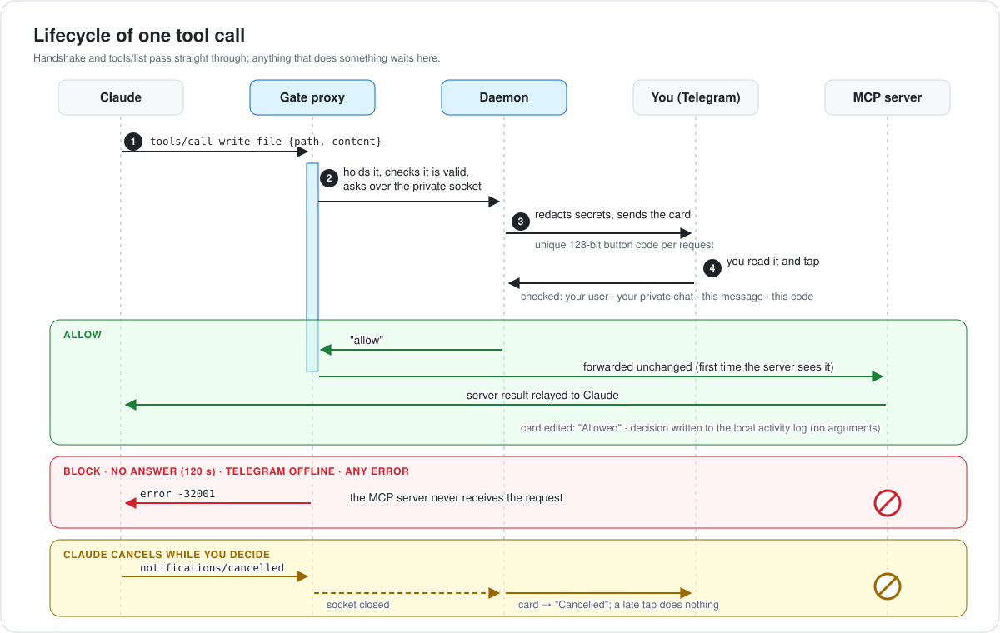
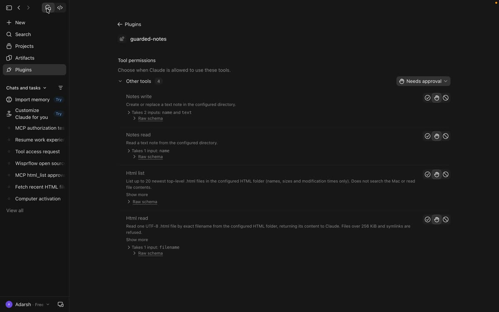
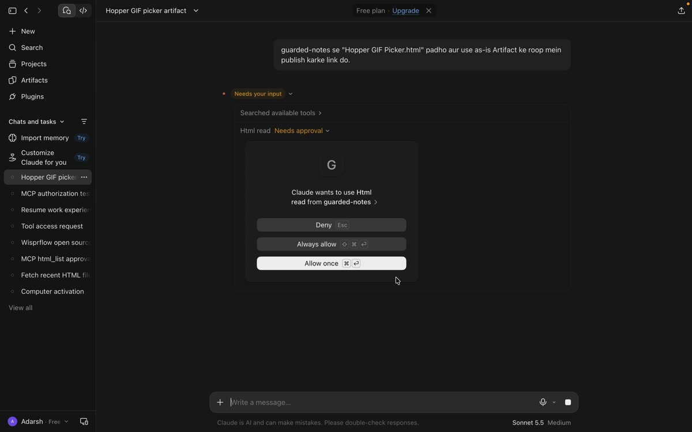
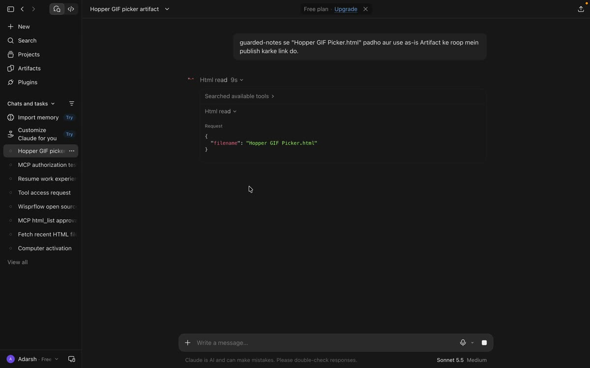
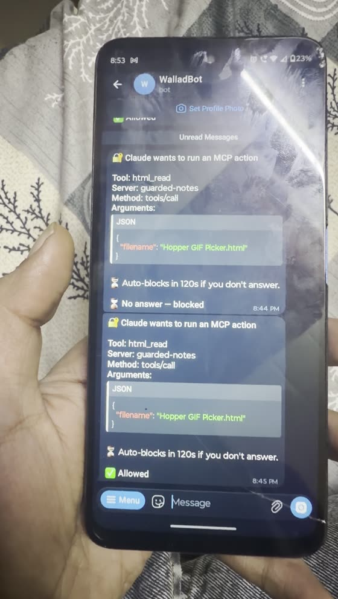
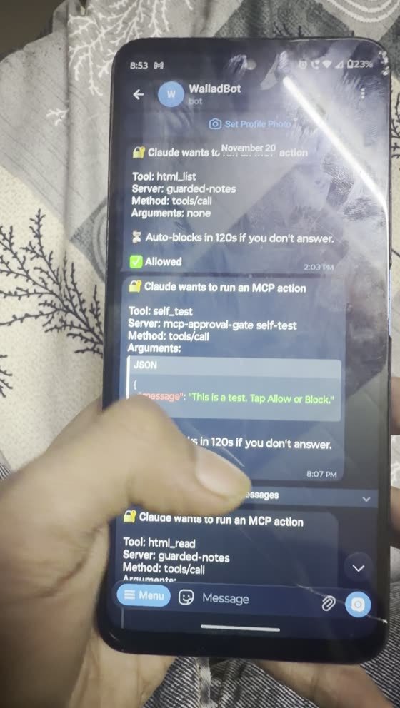

Every tool call waits for your yes.
MCP Approval Gate sits between Claude and its MCP servers. When Claude wants to write a file, open a pull request or read your data, the request is held and your phone shows exactly what it wants. Allow runs it. Block, silence or any failure stops it.
Simulation. The real timeout is 120 s; it is shortened to 12 s here.
A checkpoint inside the MCP pipe
Claude Desktop starts every MCP server itself and talks to it in JSON-RPC over stdin/stdout. One command rewrites each server's launch line so Claude starts the gate first, and the gate starts the real server behind it. Claude still sees the same server and the same tools.
Passes straight through
Setup and listing. Blocking these would only make Claude think the server is broken.
Held until you decide
Anything that does something, plus any method the gate does not recognise.

Why one daemon: Telegram lets only one process read a bot's messages, while Claude Desktop starts every server at once. One background daemon owns the bot, and every proxy asks it over a private socket.

Install, connect, approve
The whole onboarding in one take: install, pair Telegram, guard Claude Desktop, then approve and block real requests from a phone.
Four steps, one guided command
The installer creates a private environment (no sudo, system Python untouched) and walks you through everything else.
Install
Clone the project and run the installer. It starts the guided quickstart for you.
Connect Telegram
Create a bot with @BotFather (/newbot), paste its token, then send the one-time /pair <code> shown on your computer to the bot from a private chat. The bot answers “MCP Approval Gate is online”.
Run it in the background
The approval daemon becomes a login service (launchd on macOS, systemd on Linux) and restarts itself if it ever crashes.
Guard Claude Desktop
Every MCP server in claude_desktop_config.json is routed through the gate. You see the list first, and a backup is kept. Restart Claude Desktop once.
Send yourself a test
A sample approval arrives on your phone. Tap Allow or Block to confirm the round trip.
Set tools to “Always allow” in Claude. Your phone still decides.
Claude's own permission prompt and the gate are separate layers. “Always allow” in Claude only stops Claude's on-screen popup. The gate sits in the pipe underneath, so every action still waits for your tap on Telegram, and silence or an outage still blocks it.
/clear or a restart. And check mcp-approval-gate status: a server marked UNGUARDED has no gate behind it.turned off
asks every time
One request blocked by silence, one allowed by a tap
Frames from a real screen recording and the phone in the same session. The prompt asked Claude to read Hopper GIF Picker.html through the guarded-notes connector.

The guarded-notes connector exposes four tools. Every call to them goes through the gate.


Layer 1 Claude's own prompt: “Allow once” only lets Claude send the call. Layer 2 The gate holds html_read and sends the card to Telegram. Nobody answered, so after 120 s the card closed itself: No answer — blocked. The file was never read.

Same request, tapped Allowed on the phone after about 14 s. The gate forwarded it, the server returned the HTML, and Claude rendered it. Publishing it as an Artifact failed only because the Claude free-plan message limit was reached, which is unrelated to the gate.


Each card shows tool, server and arguments, and is stamped with what happened.
Fail-closed: one way in, many ways to “no”
The gate never forwards by default. Anything it cannot positively confirm returns JSON-RPC error -32001 to Claude, and the server never sees the request.
Who can approve, and what leaves your machine
Pairing
A one-time code shown on your computer, sent from a private chat, binds one Telegram user and one chat.
Every tap
Each card has its own 128-bit code. User, chat, message and code are all checked; forged or replayed taps do nothing.
24-hour session
Approvals expire on their own. /pairout turns them off instantly; renewing needs a fresh code shown locally.
Local only
The daemon socket is owner-only. The bot token never appears in Claude's config, command lines or logs.
Secrets are redacted before a card is sent
Covered by tests: API keys, GitHub and Slack tokens, AWS and Google keys, JWTs, bearer headers, PEM private keys, user:pass@ in URLs, ?token= parameters and password= in text, 22 forms in all. Telegram is not end-to-end encrypted, so you can also hide arguments entirely, or use the local popup approver instead.
Checked against real MCP servers, not mocks
The tests start real MCP server processes, so “a blocked request never reaches the server” is verified on disk.
automated tests on macOS and Linux, Python 3.10 – 3.13
security tests, each named after the attack it stops
crafted messages fuzzed with every decision set to Block
actions forwarded in that fuzz run
| Suite | Tests | Proves |
|---|---|---|
| Proxy core | 43 | What passes and what waits, denied requests never written to the server, cancellation, server crashes, HTTP auth and limits |
| Telegram | 23 | Pairing, private-chat checks, button validation, polling failures, session security |
| Security | 20 | Redaction, card size limits, forged and replayed taps, socket permissions, flooding, fuzzing |
| Daemon | 12 | Six parallel requests with mixed answers, late taps, session expiry and renewal, end to end with a real server |
| Product & examples | 31 | Installer output, Claude config wrap and undo, service files, CLI, example servers |
Run it, check it, undo it
| Command | What it does |
|---|---|
mcp-approval-gate status | Daemon health, session time left, which Claude servers are guarded |
mcp-approval-gate test | Sends a sample approval to your phone |
mcp-approval-gate renew | Turns approvals back on for 24 hours without restarting anything |
mcp-approval-gate wrap-desktop | Guards servers you added later (safe to run again) |
mcp-approval-gate activity | Recent decisions: time, server, tool, outcome; never arguments |
mcp-approval-gate uninstall | Restores Claude Desktop exactly and removes the service |
In the Telegram chat: /status, /rules, /clear and /pairout.
Questions people ask
What can it not guard?
Anything that never passes through your computer: connectors hosted by Anthropic (Settings → Connectors), web search, file upload and artifacts. It guards every local server in Claude Desktop's config, and your own remote server used as a Claude Web custom connector through HTTP mode.
What happens if my phone is off?
After 120 seconds the request is blocked and Claude gets an error. Claude can ask again later.
Will I get a card every time Claude starts?
No. Connecting and listing tools pass automatically. Only actions ask.
Can Claude do several things at once?
Yes. Each request gets its own card and its own answer. If Claude cancels one while you decide, its card is withdrawn and a late tap does nothing.
Does it cost anything?
No. It runs on your computer, the Telegram Bot API is free, and there are no AI calls or cloud services.
Does it work on Windows?
The Telegram daemon, the background service and the installer need macOS or Linux. The local popup approver is plain Python and may work on Windows, but it is only tested on macOS and Linux.